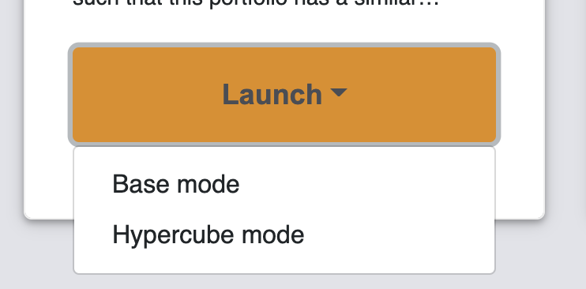

In case you have specified custom analysis scripts, make sure to include these here as well!
App deployment
Introduction
Once you are happy with the MIRO application you developed, you can deploy it. This chapter guides you through this process.
Deploying a MIRO application is the process of exporting and installing your app so that it can be used in the daily business of your end users. Before you can deploy an app, it needs to be fully set up: no further changes to the model or the configuration can be made once it is deployed. In case you did not configure your MIRO app yet, read the chapters about model deployment and configuration.
App deployment - step by step
The deployment of an application consists of two parts: The creation of a self-contained app bundle and its installation.
Create an app bundle
Before you export your app bundle, MIRO needs to know about the files that belong to your model. To tell MIRO about these files, create a text file in the root directory of your model called <modelname>_files.txt or use Studio to create this file for you. In this text file, specify the relative paths to the files that are part of your model separated by a new line. An example for a model named example can be found below:
example_files.txt
example.gms
data
inc/inc1.inc
inc/inc2.inc
Attention
When exporting a MIRO app, you have to decide how your model is to be executed. There are three options:
- Multi-user: This option allows your app to be used by multiple users simultaneously. Your model files are extracted at a random location, which is different for each user, and your model is executed from there.
- Single-user: Your model is executed inside the model directory. No extraction of your model files is required, but this means that you can NOT have multiple users accessing your MIRO app at the same time.
- Local multi-user (uses idir): With this third option, your model is again executed from a random location, but this time no model data is extracted here. Instead, GAMS is executed with an input directory pointing to the path where your model files are located. Choose this option ONLY if you have many large files that belong to your model and extracting them would take a long time. Be aware that due to the fact that idir is used, your model might brake! For example, if you use
$callor the execution-time equivalentexecute(or related functions), the relative paths used in these calls will no longer exist (since the curdir is now a random location). The solution is to prefix all these relative paths with%gams.idir1%. For example, in order to import an Excel file test.xlsx, GDXXRW needs to be called like this: $call gdxxrw i=%gams.idir1%test.xlsx. This is potentially a lot of work, so we strongly advise against using this option unless you know what you are doing!
Once you specified the files that belong to your model and you decided how your model shall be executed, you are ready to export your MIRO app! In GAMS Studio, click on "Deploy MIRO app", select the execution mode as well as which MIRO modes you want to support in your MIRO app (Base mode/Hypercube mode or both) and click on "Export". That's it! A new file <modelname>.miroapp is created in your model directory. You can now distribute this MIRO app directly to your end users!
Advice
We advise you to test your MIRO app before distributing it. GAMS Studio offers an option "test deployment". This launches MIRO with the execution mode specified and therefore simulates how your end users will experience your MIRO app. In particular, you should check whether you forgot to include important files in <modelname>_files.txt.
Bundling data with your app
In case you want to distribute data with your MIRO application, you can do so by simply placing gdx files in the data_<modelname> directory. When your MIRO app is started for the first time, these datasets will be stored in the MIRO database. The filename is used as the scenario name. To learn more, read the chapter on importing multiple scenarios on startup. Note that the owner of these scenarios is the user that launches the MIRO app for the first time!
When adding the MIRO app to the MIRO library, the user has the option to choose a logo to quickly identify your app. If you want to suggest a logo, simply place am image (png/jpg/jpeg) with the name static_<modelname> inside the static_<modelname> folder. When a user imports your app, this logo will be suggested to them.
+ Advanced: Export MIRO app using the command line
Install the MIRO app
To install a new MIRO app, launch GAMS MIRO Desktop. You will see your personal MIRO library with all the MIRO apps you have installed.

To add a new app to the library, either double click the app in your file browser (only on Windows/MacOS) or click on "Edit" (Ctrl + E or ⌘ + E on MacOS) and drag&drop the app onto the "+" button. Alternatively, you can click on the "+" button and browse to the location of the new app manually.

Once MIRO validated the new app, you can assign a title, a short description as well as a logo. Additionally, you may want to specify the location where the MIRO database should be located. This is espcially interesting if you want multiple users to access your MIRO app. Read the next chapter for more information.
Once you are happy with the setup, click on "Add app". Your app is now installed in your library and you can launch it by clicking the "Launch" button. In case your app supports both the Base mode and the Hypercube mode, the "Launch" button turns into a dropdown menu that lets you select which mode to launch.

Customize your installed MIRO apps
The MIRO Launcher offers several ways to control the behaviour of your MIRO apps. To access these settings click on "File"->"Preferences" (or "GAMS MIRO"->"Preferences" if you are on MacOS). Alternatively, press F7 (or ⌘ + , on MacOS). You will notice that there are two categories of settings: "General" settings and settings related to "Paths". In the "General" category you can specify whether you want to launch your MIRO apps in a new window of the MIRO Launcher or in your default browser. You can set the language, specify the level of detail of information to be logged as well as the number of days you want your log files to be stored for (-1 being no limit).
Furthermore, in the "Paths" section, you can control the location where your MIRO apps are stored/loaded from and the location where log files are kept. Additionally, in case you want to use a specific GAMS or R version or the MIRO Launcher was unable to locate GAMS (or R) automatically, you can set the path to GAMS (or R) here.
Collaboration
Share MIRO apps
This section covers the options you have when you want to share MIRO apps and/or scenarios between multiple users.
First, you need to specify a location in your file system where your MIRO apps are stored. To change the directory where MIRO apps are stored, go to "Settings"->"Paths" and change the "MIRO app path" to a directory where all collaborating users have at least read access. Users that are allowed to add/edit/remove apps need write access as well. Note that this only handles the location of the where the MIRO apps are stored and loaded from, not the location of the MIRO database that the apps use. If you want your users to share the same database (in order to collaborate), you can specify its location either when installing the app (as described in the previous section) or by clicking on "Edit" (Ctrl + E or ⌘ + E on MacOS).

Note
Collaborators need both read and write permissions at the database location to load and save scenarios!
Share settings
In addition to sharing MIRO apps, you may want to share settings such as "Paths" to the GAMS/R installation or even "General" settings such as the log file verbosity. To do so, you have to create a file: settings.json at the location of the shared MIRO app path. The schema for this file is as follows:
{
configpath: {
type: 'string',
minLength: 2
},
gamspath: {
type: 'string',
minLength: 2
},
rpath: {
type: 'string',
minLength: 2
},
logpath: {
type: 'string',
minLength: 2
},
launchExternal: {
type: 'boolean'
},
logLifeTime: {
type: 'integer',
minimum: -1
},
language: {
type: 'string',
enum: ['en', 'de', 'cn']
},
logLevel: {
type: 'string',
enum: ['TRACE', 'DEBUG', 'INFO',
'WARN', 'ERROR', 'FATAL']
},
important: {
type: 'array',
items:{
type: 'string',
enum: [
'gamspath',
'rpath',
'logpath',
'launchExternal',
'logLifeTime',
'language',
'logLevel'
]
}
}
}Let's look at an example: You created a shared directory <sharedFolder> where you have read and write access and all the other collaborators only have read permissions. You select this directory in your MIRO settings ("Paths"->"MIRO app path") and install your MIRO applications here. In addition, you want to set some default settings. Therefore, you create a file <sharedFolder>\settings.json:
{
"gamspath": "C:\\GAMS\\win64\\30.1",
"launchExternal": false,
"logLifeTime": -1,
"important": ["logLifeTime", "gamspath"]
}Users that set their MIRO app path to <sharedFolder> will now also load these settings in addition to the apps installed here (in this example the GAMS path is set to C:\GAMS\win64\30.1, the MIRO app is not launched in the default browser but inside a native MIRO window and the logs are never removed).
The "important" key is special: settings listed here ("logLifeTime" and "gamspath") will be fixed, meaning the user can not overwrite these. This is useful if you don't want your users to change certain options.